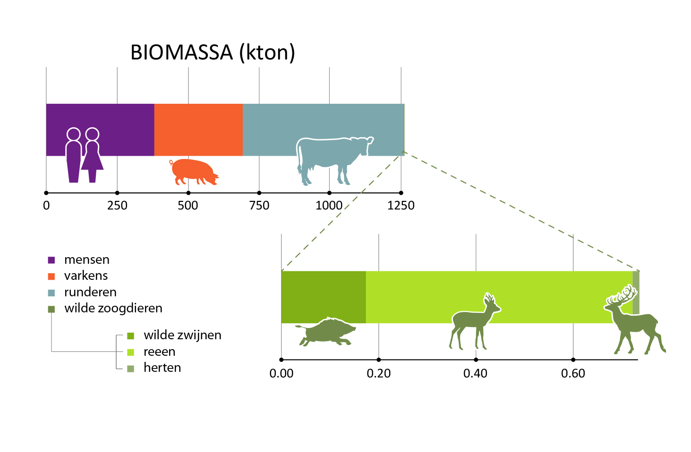

De biomassa van grote zoogdieren bestaat in Vlaanderen in hoofdzaak uit mensen, runderen en varkens.
Figuur 1. Biomassaverdeling (in kton) van grote zoogdieren in Vlaanderen. De onderste balk toont een uitvergroting van de categorie ‘wilde zoogdieren’ in de bovenste balk. Deze figuur verwijst naar figuur 7 uit het Natuurrapport 2020.
Naar analogie met de analyse wereldwijd (Bar-On, Phillips, en Milo 2018), vergelijken we de biomassa van de mens en de gedomesticeerde dieren met de biomassa van de wilde soorten. Voor Vlaanderen zijn data beschikbaar voor grote zoogdieren: mensen, runderen, varkens, herten, reeën en everzwijnen.
In Vlaanderen bestaat meer dan 99,9 procent van de biomassa uit mensen, runderen en varkens en minder dan 0,1 procent uit wilde zoogdiersoorten, zoals everzwijnen, reeën en herten. Dit aandeel ligt hoger dan het wereldwijd gemiddelde. Wetenschappers schatten het aandeel van de mens en gedomesticeerde zoogdieren op 96%. Het aandeel van wilde dieren op 4 procent. De biomassa van die laatste groep is er door de mens sterk op achteruitgegaan (Bar-On, Phillips, en Milo 2018).
Ondanks dat uitgesproken onevenwicht ervaren we in Vlaanderen het groeiende aantal zoogdieren, zoals everzwijnen, als een toenemende druk op de leefomgeving. Dat komt vooral door de economische schade die ze toebrengen aan landbouwgewassen, en door de mogelijke overdracht van ziektes op gedomesticeerde varkens. Andere grote zoogdieren - zoals de wolf die zich voorzichtig begint te vestigen - worden verwelkomd door de ene, terwijl anderen ze als een bedreiging ervaren. Nochtans spelen carnivoren een essentiële rol in het evenwicht van natuurlijke levensgemeenschappen (Dirzo e.a. 2014).
In het Natuurrapport 2020 staat een meer gelayoute figuur.

Bar-On, Yinon M., Rob Phillips, en Ron Milo. 2018. “The biomass distribution on Earth”. Proceedings of the National Academy of Sciences of the United States of America 115 (25): 6506–11. https://doi.org/10.1073/pnas.1711842115.
Dirzo, Rodolfo, Hillary S. Young, Mauro Galetti, Gerardo Ceballos, Nick J. B. Isaac, en Ben Collen. 2014. “Defaunation in the Anthropocene”. Science 345 (6195): 401–6. https://doi.org/10.1126/science.1251817.